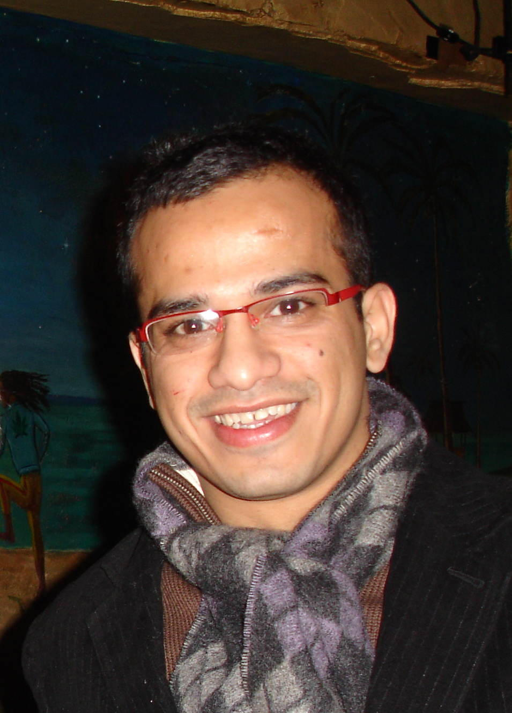

Science leader with a unique blend of academic rigor and industry impact. Previously, I led an applied science organization at Amazon Web Services (AWS), driving post-training science for Amazon Bedrock and SageMaker — from customizing foundation models and developing guardrails, to leading open-source efforts on graph ML and AutoML. Prior to that, I held a tenured professorship in the Computer Science Department at George Mason University (2008–2025), including a stint as Interim Chair (2021–2022). I am most proud to be the recipient of the NSF CAREER Award (2013–2018), the GMU Teaching Excellence Award (2014), the Outstanding Researcher Award (2018), and the OSCAR Undergraduate Mentoring Excellence Award (2018). Thanks to NSF, NIH, DARPA, Google, DHS, and NRL for supporting my research. I hold a Ph.D. (2008) and M.S. (2005) from the University of Minnesota, Twin Cities and a B.E. from VJTI Mumbai (2003).
What energizes me most is connecting advanced science to real problems. In academia, this meant pursuing inter-disciplinary science — applying machine learning to biology, medicine, education, and social sciences — in the belief that the most interesting questions live at the boundaries between fields. In industry, it means connecting scientific innovation to real customer impact. Whether it's training foundation models for time series forecasting, making generative AI safer through guardrails, or optimizing GPU kernels with reinforcement learning — I believe the best research happens when curiosity meets customer obsession.
I'm passionate about building high-performing teams, mentoring the next generation of scientists, teaching, and creating cultures where exploration and delivery coexist. See my student advisees.
Led a 70-person applied science organization driving post-training science for Amazon Bedrock and SageMaker, and open-source efforts in GraphML and AutoML.
2025–26
My teams shipped several high-impact launches. We released Chronos-2, Amazon's foundation model for time series forecasting, which achieved state-of-the-art results across all major benchmarks and surpassed 600M downloads. AutoGluon 1.4 and 1.5 set new records for tabular and time series prediction. I led science for Amazon Bedrock Guardrails, expanding content moderation to 100+ languages and new modalities. We launched reinforcement fine-tuning at re:Invent 2025, and explored RL-based GPU kernel optimization achieving up to ~2x speedups.
2024
The team launched Amazon Bedrock GraphRAG at re:Invent 2024 and I stood up the Think Forward Lab for forward-looking research in autonomous agents and kernel optimization.
2023
I supported the open-source GraphStorm project for training large-scale graph neural networks, integrated with Amazon Neptune & applied on applications at Amazon for Search, Ads and Fraud.
2022
I led the team that built custom ML solutions with AWS customers in healthcare, semiconductor, and pharmaceutical industries through the ML Solutions Lab.
Interim Chair (2019–2020)
Recruited 13 new faculty members including chair and 10 tenured/tenure-track faculty. Improved CS Rankings score from 60+ to 34. Won a $3M Break Through Tech Grant from Cornell Tech to improve women graduates in CS from 18% to 33%. Led virtual transition during COVID-19 serving 2,000+ students.
Lawrence Cranberry Faculty Fellow (2019–2024)
Endowed faculty fellowship recognizing research excellence. Also served as Smithsonian Institution Fellow (2021).
Research & Funding
Secured over $10M in external funding as PI/Co-PI from NSF, NIH, DARPA, Google, DHS, and NRL. Led research in machine learning, data mining, bioinformatics, learning analytics, and fairness-aware algorithms. Published 130+ peer-reviewed papers. General Chair for ACM KDD 2022 in Washington, DC (2,000+ attendees).
Teaching & Mentoring
Graduated 12 Ph.D. students (now at Google, Microsoft, Amazon, Intel, LinkedIn). Advised 7 M.S. thesis students and 14 undergraduate mentees. Taught Data Mining, Computer Systems Architecture, Biological Data Mining, and Parallel Computing. Received Outstanding Researcher, Outstanding Teaching, and Undergraduate Mentoring Excellence awards. NSF CAREER Award recipient (2013–2018).
† Winner of CS Department Outstanding Graduate Student Award
| Name | Thesis | Graduated | Position After |
|---|---|---|---|
| Jonathan Vasquez | Auditing Discrimination Risks in Datasets | 12/2024 | Co-Founder, EvoConsulting & EvoAcademy |
| Xavier Gitiaux | Pre- and Post-Fairness Processing for Black Box Classifiers | 05/2022 | Scientist, Microsoft |
| Al-Amin Hosain (Co-Advisor: Prof. Kosecka) | Word-Level Sign Language Recognition From Videos | 12/2021 | Scientist, Walmart Labs |
| Yujing Chen | Sensor Analytics using Multi-Task Learning and Federated Learning | 05/2021 | Applied Scientist, Amazon |
| Mohammad Arifur Rahman | Efficient and Interpretable Machine Learning Algorithms for Predictive Analyses in Metagenomic Data | 12/2020 | Applied Scientist, Amazon |
| Qian Hu | Educational Data Mining for All: Fair Machine Learning for Student Modeling and Forecasting | 07/2020 | Applied Scientist, Amazon |
| Zhiyun Ren | Academic Performance Prediction Using Machine Learning Techniques | 05/2019 | Scientist, LinkedIn |
| Azad Naik | Hierarchical Classification with Rare Categories and Inconsistencies | 02/2017 | Data Scientist, Microsoft |
| Anveshi Charuvaka † | Regularized Learning in Multiple Tasks With Relationships | 09/2017 | Applied Scientist, Amazon |
| Tanwistha Saha (Co-Advisor: Prof. Domeniconi) | Learning in Relational Networks | 11/2014 | Advanced Analytics & Deployment Engineer, Intel |
| Samuel Blasiak † | Latent Variable Models of Sequences for Classification and Discovery | 08/2013 | Software Engineer, Google |
| Zeehasham Rasheed | Data Mining Framework for Metagenome Analysis | 04/2013 | Data Scientist, AOL |
| Nuttachat Wisittipanit (Co-Advisor: Prof. Gillevet) | Machine Learning Approach for Profiling Human Microbiome | 03/2012 | — |